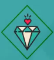
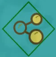
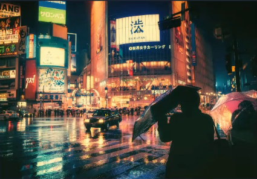
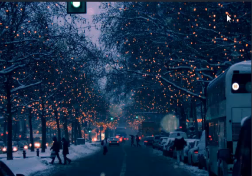

春花秋月何时了
Right I die. My life before my eyes.
As I was hang there,I see wonderland, I don't really see much of anything.But I see you.That is crazy.


喜欢你是一件麻烦的事情
而我却很喜欢找麻烦！
最是那一低头的温柔，恰似一朵水莲花不胜凉风的娇羞。道一声珍重，道一声珍重，那一声珍重里有蜜甜般的哀愁...
北国之春
暖流如柳丝
夜晚的街巷是那么的和蔼可爱，遇见你和我的青春！


相信未来
未来并不遥远，遥远的是过去。
当蜘蛛网无情地查封了我的炉台,当灰恕的余烟叹息着贫困的悲哀，我依然固执地铺平失望的灰烬,用美丽的雪花写下:相信未来。当我的紫葡萄化为深秋的露水。
相信未来
当我的鲜花依艇在别人的情怀,我依然固执地用凝洁的枯藤,在凄凉的大地上写下:相信未来,我要用手指那涌向天边的排浪,我要用手掌那E起太阳的大海,摇曳着曙光那支温暖漂亮的笔杆,用孩子的笔体写下:相信未来。
believe future
我之所以坚定地相信未来,是我相信未来人们的眼睛——她有拨开历史风尘的睫毛,她有看透岁月篇章的瞳孔.
believe future
我之所以坚定地相信未来,是我相信未来人们的眼睛——她有拨开历史风尘的睫毛,她有看透岁月篇章的瞳孔.
believe future
我之所以坚定地相信未来,是我相信未来人们的眼睛——她有拨开历史风尘的睫毛,她有看透岁月篇章的瞳孔.
believe future
我之所以坚定地相信未来,是我相信未来人们的眼睛——她有拨开历史风尘的睫毛,她有看透岁月篇章的瞳孔.
believe future
我之所以坚定地相信未来,是我相信未来人们的眼睛——她有拨开历史风尘的睫毛,她有看透岁月篇章的瞳孔.
believe future
我之所以坚定地相信未来,是我相信未来人们的眼睛——她有拨开历史风尘的睫毛,她有看透岁月篇章的瞳孔.